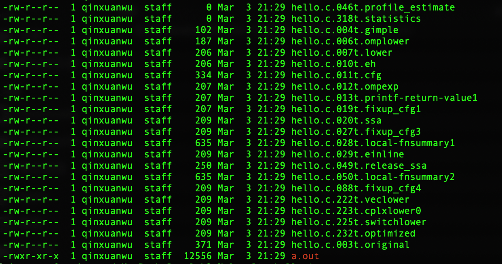

GCC编译器和LLVM编译器的编译过程以及效率对比
实验目的和内容
本实验主要的内容为在 Linux 平台上安装和运行工业界常用的编译器 GCC 和 LLVM，如果系统中没有安装，则需要首先安装编译器，安装完成后编写简单的测 试程序，使用编译器编译，并观察中间输出结果。
实现的内容与方法
本机环境： 系统masOS Catalina，已安装homebrew
1 编译器安装
1 | |
2 编写测试程序
单个程序
1
2
3
4#include <stdio.h>
int main(){
printf("hello\n");
}多个程序
cal.c1
2
3
4
5
6
7
8#include <stdio.h>
int add(int a,int b);
int main(){
int num1, num2;
scanf("%d %d",&num1,&num2);
int res = add(num1,num2);
printf("%d\n", res);
}add.c1
2
3
4#include "add.h"
int add(int num1, int num2){
return num1+num2;
}
3 运行编译器进行观测
GCC
查看编译器版本
1
2gcc -v
$ gcc version 8.3.0 (Homebrew GCC 8.3.0_2)使用gcc编译单个文件
1
gcc -o hello hello.c使用gcc编译链接多个文件
1
gcc -o cal cal.c add.c查看预处理结果
1
gcc -E hello.c -o hello.i查看语法分析树
1
gcc -fdump-tree-all hello.c生成的文件列表，使用
ls -ltr查看(按生成顺序倒序排列)查看中间代码生成结果
1
gcc -fdump-rtl-all hello.c生成的文件列表，使用
ls -ltr查看(按生成顺序倒序排列)
查看生成的目标代码(汇编代码)
1
gcc -o hello.asm -S hello.c
LLVM
查看编译器的版本
1
clang -v返回结果
1
2
3
4Apple clang version 11.0.0 (clang-1100.0.33.17)
Target: x86_64-apple-darwin19.3.0
Thread model: posix
InstalledDir: /Applications/Xcode.app/Contents/Developer/Toolchains/XcodeDefault.xctoolchain/usr/bin使用编译器编译单个文件
1
clang -o hello hello.c使用编译器编译链接多个文件
1
clang -o cal cal.c add.c查看编译流程和阶段
1
clang -ccc-print-phases test.c -c终端的输出：
查看词法分析结果
1
clang test.c -fsyntax-only -Xclang -dump-tokens查看词法分析结果 2:
1
clang test.c -fsyntax-only -Xclang -dump-raw-tokens生成的结果：
查看语义分析结果
1
2clang test.c -Xclang -ast-dump # error link
clang -fsyntax-only -Xclang -ast-dump test.c部分结果：

查看语义分析结果 2
1
2clang test.c -Xclang -ast-view # clang: error: linker command failed with exit code 1
clang test.c -fsyntax-only -Xclang -ast-view # 因为缺乏gv环境 此命令未能得到成功结果部分结果：
查看编译优化的结果:
1
clang test.c -S -mllvm -print-after-all部分结果：
查看生成的目标代码结果 Target code generation
1
clang –S test.c生成的目标代码文件开头：
运行结果分析

GCC 运行结果分析
词法分析 –> 语法分析 –> 生成语法树 –> 高级gimple –> 低级gimple –> cfg –> ssa –>RTL –>目标代码(汇编代码)
GENERIC、GIMPLE和RTL三者构成了gcc中间语言的全部，它们以GIMPLE为核心，由GENERIC承上，由RTL启下，在源文件和目标指令之间的鸿沟之上构建了一个三层的过渡。
预处理结果
运行
gcc -E hello.c –o hello.i，将会产生 hello.i 文件，这就是 hello.c 经过预处理后的文件。原本4行的程序，经过预处理，得到了580行的预处理文件预处理文件开头：
预处理文件结尾：
可以看到， hello.c 经过预处理后得到的 hello.i文件，除了原本的几行代码之外，还包含了很多额外的变量、函数等等，这些都是预处理器处理的结果。
语法分析树
运行
gcc -fdump-tree-all hello.c后，一共生成了22个文件，其命名格式均为filename.c.<num>t.name分析这22个文件内容(顺序为生成的先后顺序)：
- 046t.profile_estimate/318t.statistics为空白；
- 007t.lower/010t.eh相同；
- 012t.ompexp/013t.printf-return-value1/019t.fixup_cfg1相同；
- 020t.ssa/027t.fixup_cfg3/029t.einline/088t.fixup_cfg4/222t.veclower/223t.cplxlower0/225t.switchlower/232t.optimized相同
- 028t.local-fnsummary1/050t.local-fnsummary2相同
- 其余还有004t.gimple/006t.omplower/011t.cfg /049t.release_ssa 不与其他相同
以下重点对比源文件与004t.gimple/010(即007t.lower)/013的区别，其排序与生成顺序一致
main函数转变为高端gimple的过程 ：004t.Gimple
GCC 利用 “gimplifier” 将 GENERIC 中间表示转换为 GIMPLE中间表示。
语法树到高端gimple的转化是以语法树的节点为单位进行遍历的
- 以函数为单位进行转化，并且将函数内部的所有变量以及编译器为方便生成运行时结构所创建的临时变量都提高到函数最开始的位置，为计算栈空间和使用寄存器提供依据
- 将函数执行语句集中到一起，并且其顺序与语法树种所表现的顺序一致，为配合运行时结构会增减一些语句
return语句转低端gimple的处理：007t.lower/010t.eh：
GIMPLE中有一个lower的动作，用于将高层次的GIMPLE表示，解析成低层次的，这个lower动作在pass_lower_cf中完成。
高端gimple到低端gimple主要完成数据合并，代码合并和返回语句合并，有利于最后生成更规整的后端代码
- 在gimple_return语句的位置插入一条goto lable跳转语句
- 将gimple_return语句暂存起来，将gimple语句序列中的gimple_return语句删掉
- 待所有的语句都lower gimple转换完之后，再将gimple_return语句做gimple_return的处理，处理过程是先添加一个标号，以便于第一句的goto lable对应上，然后再把return 语句插入gimple语句序列
经过以上处理得到的低端gimple已经足以支持生成最终的目标代码，确定运行时结构了，但是gcc考虑到优化，在此基础上转化了cfg和ssa结构
低端gimple到cfg结构中间代码：012t.ompexp/013t.printf-return-value1/019t.fixup_cfg1
GCC设计cfg ( control flow graph ) 主要是用于函数内部的控制流转化，跨函数间的逻辑优化由于逻辑比较复杂，GCC目前还没有完成
cfg的主要作用是在低端gimple的基础上将语句分成几个基本块(basic block)，在基本块内，代码是顺序执行的，不存在跳转语句，如果有跳转语句，则放在块的最后，保证跳转只发生在块与块之间，即在gimple中，指令跳转的语句就是基本块的边界
- 013t与之后生成的hello.c.019t.fixup_cfg1/hello.c.027t.fixup_cfg3内容一致。相比007t.lower/010t.eh，语句被划分为几块，goto语句被取代。
cfg转ssa：020t.ssa
为每个变量增加一个版本号，用于数据流的优化，它的结构是跟低端gimple的结构相同的
如下cfs1与ssa的对比，变量int下多了一个版本号
中间结果及目标代码
考虑到平台的通用性，gcc生成了一套通用的RTL结构，将在RTL的基础上转化为目标代码
使用gcc -fdump-tree-all hello.c 查看生成的中间结果
生成RTL
由于GCC是支持多种平台的，在不同的平台上生成的汇编代码的格式肯定是不同的，如果为每个平台的汇编代码都写一套优化逻辑，是不太现实的，为了解决这个问题，GCC提供了一种中间形式的汇编语言RTL(Register Transfer Language)，它与具体的平台无关，这样所有的优化都可以基于RTL了，在所有的优化完成之后，再转变成针对不同硬件平台的汇编代码，每一条RTL语句称为一条insn语句
转化为RTL阶段的主要步骤
- 转化为初始的RTL
- 明确初始的RTL中的运行时结构信息，此时把虚拟寄存器更新为真实的寄存器
RTL生成目标代码，也就是汇编代码，
gcc -o hello.asm -S hello.c查看
LLVM 运行结果分析
查看编译流程和阶段
clang -ccc-print-phases test.c -c返回的结果
- 0：获得源代码
main.c，c语言文件 - 1：预处理阶段，做相应处理
- 2：编译阶段
- 3：步骤通过后端进行汇编前的处理
- 4：汇编阶段
- 5：链接阶段，做相应处理
通过如上步骤可以了解到整个过程以及过程中的一些信息。例如首先进行的预处理操作可以使用如下命令查看具体信息：
- 0：获得源代码
预处理阶段
clang -E test.c这个过程包括宏的替换，头文件的导入等等
词法分析
在此步骤会把代码切成一个个Token，比如大小括号，等于号还有字符串等。
1
2
3
4# 词法分析1
clang -fsyntax-only -Xclang -dump-tokens test.c
# 词法分析2
clang test.c -fsyntax-only -Xclang -dump-raw-tokens图片中依次为词法分析1，词法分析2和源文件
可以看到，-dump-raw-tokens仅仅输出我们编写的test.c的词法分析结果，而-dump-tokens输出还包括所有头文件的词法分析结果
语法分析
验证程序的语法是否正确，然后将所有的节点组成抽象语法树AST
1
2
3
4# 语法分析1
clang -fsyntax-only -Xclang -ast-dump test.c
# 语法分析2
clang test.c -fsyntax-only -Xclang -ast-view # 因为缺乏gv环境 此命令未能得到成功结果下图依次是语法分析1得到的抽象语法树ast，语法分析2的得到的语法树生成图的源文件。test.c的源代码
这些步骤完成之后就要开始进行IR中间代码的生成了，代码生成器CodeGen会负责将语法树自顶向下遍历逐步翻译成LLVM IR，IR就是编译过程的前端的输出以及后端的输入；此步骤LLVM会去做些优化工作，在Xcode的编译设置里也可以设置优化的级别-01，-03，-0s等；
1
2
3
4# 查看生成的IR中间代码
clang -S -fobjc-arc -emit-llvm main.m -o main.ll
# 查看LLVM编译优化的结果
clang test.c -S -mllvm -print-after-all下图依次为中间代码，LLVM编译优化的结果
生成汇编文件
clang –S test.c下图左为源文件，右为生成的汇编代码
GCC 与 LLVM 对比分析
源文件均为C语言的hello world
下图左为gcc生成的汇编文件，右为llvm生成的汇编文件
优化编译
gcc提供了从O0-O3以及Os这几种不同的优化级别供大家选择
- O0： 不做任何优化，这是默认的编译选项。
- -O和-O1： 对程序做部分编译优化，对于大函数,优化编译占用稍微多的时间和相当大的内存。使用本项优化，编译器会尝试减小生成代码的尺寸，以及缩短执行时间，但并不执行需要占用大量编译时间的优化。
- -O2： 是比O1更高级的选项，进行更多的优化。Gcc将执行几乎所有的不包含时间和空间折中的优化。当设置O2选项时，编译器并不进行循环打开（）loop unrolling以及函数内联。与O1比较而言，O2优化增加了编译时间的基础上，提高了生成代码的执行效率。
- -O3： 比O2更进一步的进行优化。在包含了O2所有的优化的基础上，又打开了以下优化选项：
- -finline-functions：内联简单的函数到被调用函数中。由编译器启发式的决定哪些函数足够简单可以做这种内联优化。默认情况下，编译器限制内联的尺寸，3.4.6中限制为600（具体含义不详，指令条数或代码size？）可以通过-finline-limit=n改变这个长度。这种优化技术不为函数创建单独的汇编语言代码， 而是把函数代码包含在调度程序的代码中。 对于多次被调用的函数来说, 为每次函数调用复制函数代码。 虽然这样对于减少代码长度不利, 但是通过最充分的利用指令缓存代码, 而不是在每次函数调用时进行分支操作, 可以提高性能。
- -fweb：构建用于保存变量的伪寄存器网络。 伪寄存器包含数据, 就像他们是寄存器一样, 但是可以使用各种其他优化技术进行优化, 比如cse和loop优化技术。这种优化会使得调试变得更加的不可能，因为变量不再存放于原本的寄存器中。
- -frename-registers：在寄存器分配后，通过使用registers left over来避免预定代码中的虚假依赖。这会使调试变得非常困难，因为变量不再存放于原本的寄存器中了。
- -funswitch-loops：将无变化的条件分支移出循环，取而代之的将结果副本放入循环中。
优化编译测试文件采用Lab1中的快速排序代码
GCC优化编译
规模为50000的1000000以内的不重复随机数(算法效率$O(log_n))$
规模为50000的逆序排列(算法效率$O(n^2)$)
每组实验重复5次，最后运行时间取平均数，单位为ms
优化方式 O(logn) O(N^2) -O0 6 2830 -O1 3 505.4 -O2 4 835 -O3 3 567 gcc四种优化编译效率对比
LLVM优化编译
规模为50000的1000000以内的不重复随机数
规模为50000的逆序排列
每组实验重复5次，最后运行时间取平均数，单位为ms
优化方式 O(logn) O(N^2) -O0 6 2368 -O1 3 567 -O2 3 574 -O3 3 556
llvm四种优化编译效率对比
GCC与LLVM优化编译效果对比
- 可以看出，总体而言，llvm优化效率是优于gcc的
- 面对快排这样的少循环多递归的情况，-O2的优化效率是不如-O1和-O3的
实验心得体会
了解工业界常用的编译器 GCC 和 LLVM。以前我对编译器之前的区别并没有比较明确的认知，这此实验之后我才知道macOS系统里的gcc命令实际上调用的是clang命令；
熟悉编译器的安装和使用过程。本次实验的过程较实验1曲折了很多，过程中也遇到了很多波折，虽然很多波折是与实验本身无关的—-比如安装GCC编译器需要把下载源换为国内的tuna/USTC；
wgetbrew等软件包管理工具，在下载软件不成功的时候会尝试下载软件的源代码，然后在本地编译；了解编译器的优化效果。本次实验并不是我们第一次接触gcc命令，以前我们学习过了基础的gcc命令参数，怎么进行gdb调试，以及makefile的写法；通过本次实验，我终于又系统了解了一遍gcc命令的相关参数的作用，进一步了解了编译优化；
观察编译器工作过程中生成的中间文件的格式和内容。本次实验中，我进一步了解了GCC编译器编译的全过程，以及这些过程存在的原因。gcc编译的过程有词法分析 –> 语法分析 –> 生成语法树 –> 高级gimple –> 低级gimple –> cfg –> ssa –>RTL –>目标代码(汇编代码)。低端gimple已经足以支持生成最终的目标代码，确定运行结构了，但是gcc考虑到优化，还在此基础上转化了cfg和ssa结构。RTL结构是gcc为了平台的通用性而生成的一套通用的RTL结构，最终在RTL的基础上转化为汇编代码。
本次实验进一步为我们对编译器的学习和构造奠定了基础。